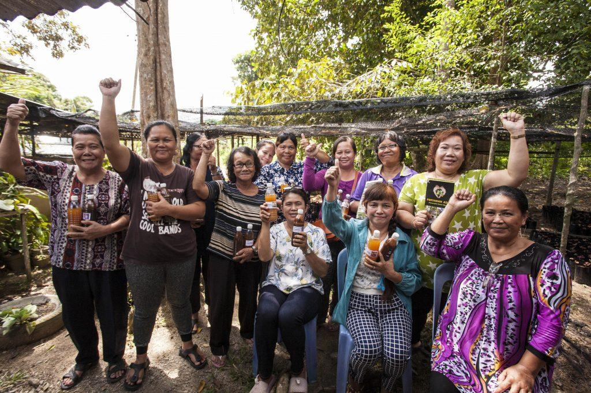

Culture

Animism:
Many Orang Asli groups practice animism, believing in spirits that inhabit natural objects, animals, and places. Rituals and ceremonies to honor these spirits are central to their daily life.

Traditional Clothing:
Traditional clothing is often made from natural materials such as tree bark, leaves, or woven fibers.
The attire varies by ethnic group, but it is often simple and practical for the tropical environment.

Music and Dance :
Indigenous music is often characterized by the use of traditional instruments such as gongs, drums, and bamboo flutes.
Dance and music play an important role in rituals and social gatherings.

Handicrafts:
Many Orang Asli communities are skilled in making crafts such as woven baskets, mats, and intricate beadwork.

Social Structure:
The social structure is often clan-based, and decisions are made by community elders. The role of women can vary but is typically centered around family and agricultural tasks.